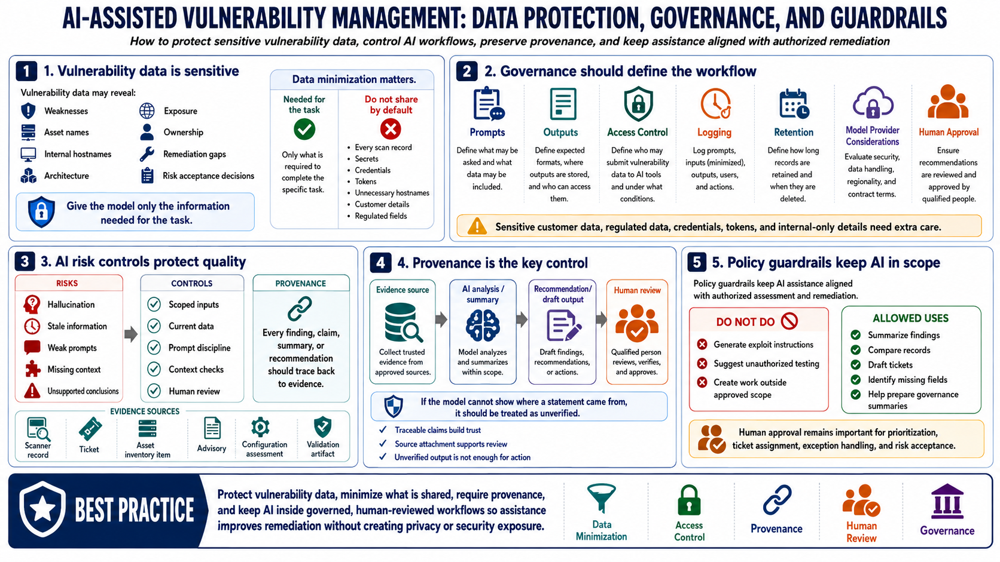

Governance, Privacy, and AI Risk Controls
Connecting to LMS... Progress: in progress

Narration
Vulnerability data is sensitive. It may reveal weaknesses, asset names, internal hostnames, architecture, exposure, ownership, remediation gaps, or risk acceptance decisions. AI-assisted workflows must protect the data they analyze. Data minimization matters: give the model the information needed for the task, not every scan record, secret, hostname, customer detail, or regulated field by default.
Governance should cover prompts, outputs, access control, logging, retention, model provider considerations, and human approval. Teams should know who can submit vulnerability data to AI tools, what data may be included, where outputs are stored, how long records are retained, and how generated recommendations are reviewed. Sensitive customer data, regulated data, credentials, tokens, and internal-only details require especially careful handling.
AI risk controls should address hallucination, stale information, weak prompts, missing context, and unsupported conclusions. Source provenance is essential: every finding, claim, summary, or recommendation should be traceable to a scanner record, ticket, asset inventory item, advisory, configuration assessment, or validation artifact. If the model cannot show where a statement came from, the workflow should treat that statement as unverified.
Policy guardrails should keep AI assistance aligned with authorized assessment and remediation. The system should not generate exploit instructions, suggest unauthorized testing, or create work outside approved scope. Human approval remains important for prioritization, ticket assignment, exception handling, and risk acceptance. Governance makes AI useful without turning vulnerability data into an uncontrolled privacy or security exposure.